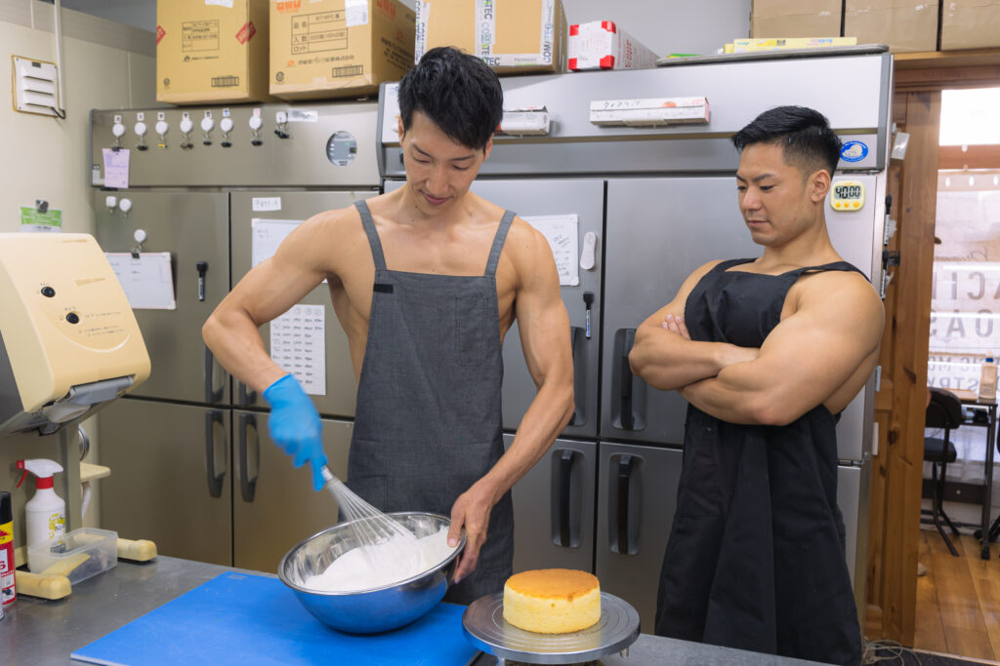

.png)

肉体を変えるチーズを作ろう
チーズビルダー養成学校「Cheese BuildingーTOKYO」
ABOUT
チーズビルディングについて
Cheese Buildingは、チーズビルダー養成学校です。
チーズの素晴らしさを、肉体の健康を通じて、できるだけ多くの人に知っていただきたい。
そして、チーズを通して、筋肉をバルクアップしたい。あの頃の純粋な自分を取り戻したい。
そんな思いから、チーズビルダー養成学校「Cheese BuildingーTOKYO」は歩みを始めています。
卒業後、チーズを通しての健康促進はもちろんのこと、
チーズビルダーとしての肉体造りもサポートします。
COURSE
未経験からでもスタートできるよう、カリキュラムは多くの専門家や
現役チーズビルダーのアドバイスのもと、作られました。
本格的な農園を使った実地研修
Cheese Buildingでは、本格的な農園を使った実地研修を
行うことができます。プロとして活躍するチーズビルダーも
使用するような、広大で環境も整った農園を余すところ
なく使い、卒業時には本格的なチーズを自分の力で作れる
実践力の養成を目指します。
行うことができます。プロとして活躍するチーズビルダーも
使用するような、広大で環境も整った農園を余すところ
なく使い、卒業時には本格的なチーズを自分の力で作れる
実践力の養成を目指します。
必要な知識もしっかりと取得
肉体を変えるには、しっかりとした食に関する知識が
欠かせません。Cheese Buildingでは、一流講師陣による、
肉体造りに必要ないろはを余すところなく学べます。
チーズそのものでなく、栄養学全般を学ぶことも可能です
ので、チーズビルダー以外への展開も夢ではないでしょう。
欠かせません。Cheese Buildingでは、一流講師陣による、
肉体造りに必要ないろはを余すところなく学べます。
チーズそのものでなく、栄養学全般を学ぶことも可能です
ので、チーズビルダー以外への展開も夢ではないでしょう。
卒業制作はティスティング審査あり
Cheese Buildingでは最後の2ヶ月間で卒業制作を実施。
卒業制作として、チーズ作りを実際に行います。卒業後、
一般参加によるティスティング審査があるため、作り手の
目線だけでなく、バルクアップの目線からも、卒業制作作品
としてのチーズを、しっかりと評価いただくことができます。
卒業制作として、チーズ作りを実際に行います。卒業後、
一般参加によるティスティング審査があるため、作り手の
目線だけでなく、バルクアップの目線からも、卒業制作作品
としてのチーズを、しっかりと評価いただくことができます。
NEWS
ニュース
2929/2/9
Cheese Building会長の相澤さんによる
チーズだけをふんだんに使用した話題のピザ屋
「Bulk Pizza」が原宿でオープンしました！
2029/9/29
Cheese Building卒業生の横川さんによる
肉体改造のための味方、「Muscle Cheese」
が全国コンビニで販売開始されました！

2092/2/29
チーズアカデミー講師の中山さんによる
チーズをふんだんに使用した話題のプロテイン
「C Protein」がネット販売開始しました！
Access
会社情報
学校名
Cheese BuildingーTOKYO
事務所所在地
〒107-0061東京都港区北青山3-5-6 青朋ビル2F
TEL
03-5413-5045
FAX
03-5413-5046
MAIL
dummy@cheesebuilding.tokyo
CONTACT
説明会申し込み•お問い合わせ
ぜひ1度、脚を運んでみませんか。合同トレーニングは随時開催中。
その他、お問い合わせもお気軽にどうぞ。お待ちしております。
※Cheese Buildingはあなたの心の中にあります。
間違ってもお問い合わせしないなんてことがないようお願いいたします。